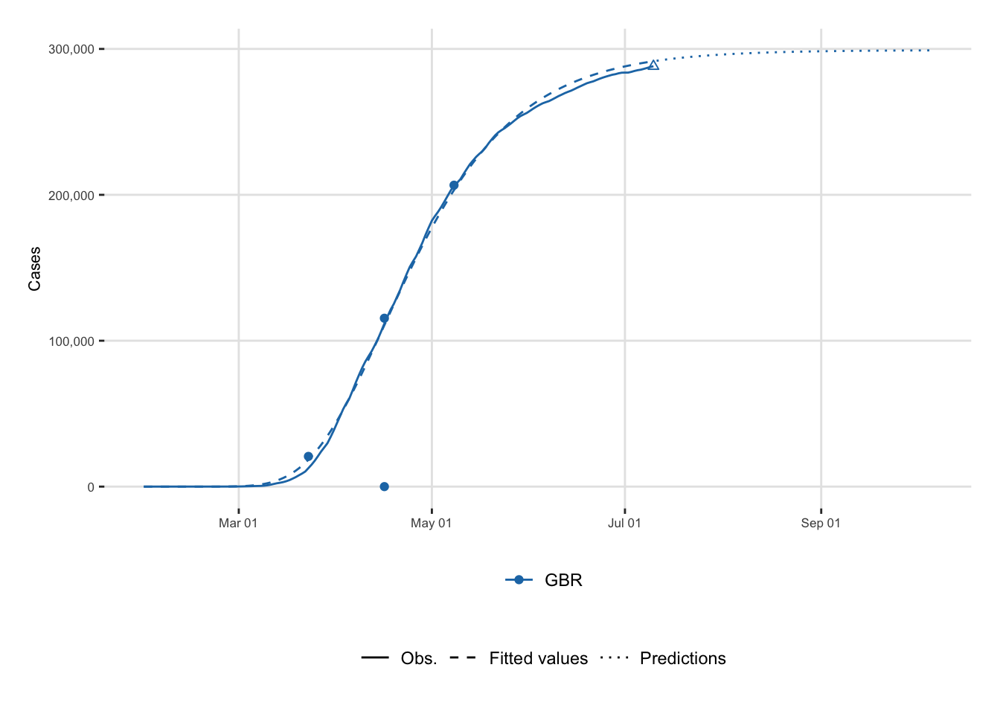
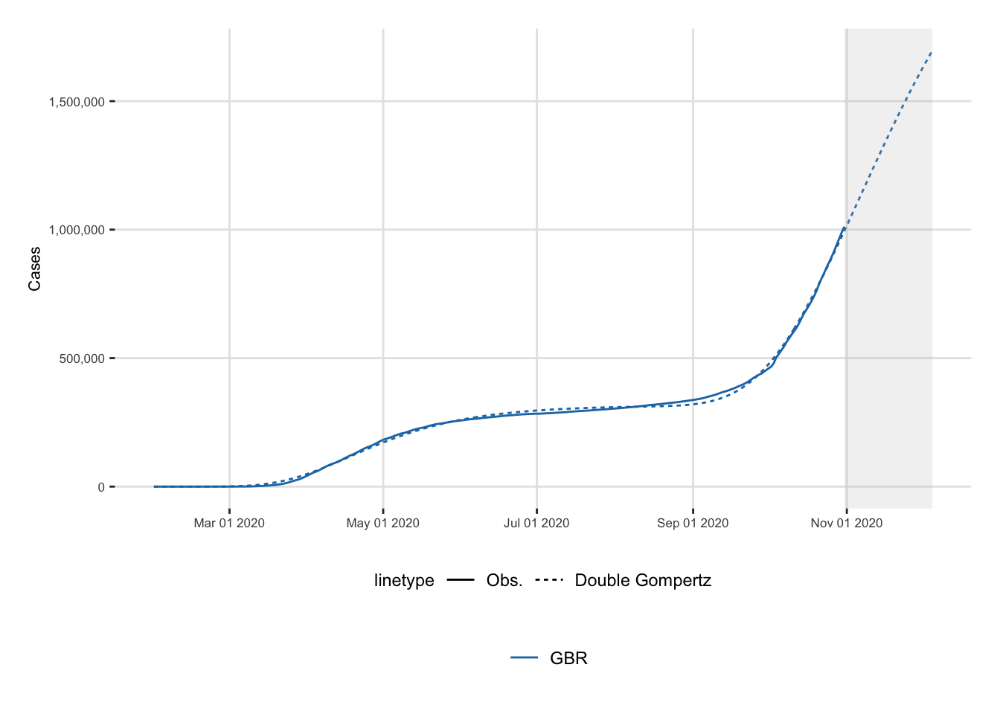

# FOR UNIX USERS
Sys.setlocale("LC_ALL", "en_US.UTF-8")[1] "en_US.UTF-8/en_US.UTF-8/en_US.UTF-8/C/en_US.UTF-8/en_US.UTF-8"# FOR WINDOWS USERS
# Sys.setlocale("LC_ALL", "English_United States")This chapter shows R codes that can be used to fit the phenomenological models, presented in Chapter 6, on observed confirmed cases. It shows the codes to model a single wave, and those that can be used to model two waves.
# FOR UNIX USERS
Sys.setlocale("LC_ALL", "en_US.UTF-8")[1] "en_US.UTF-8/en_US.UTF-8/en_US.UTF-8/C/en_US.UTF-8/en_US.UTF-8"# FOR WINDOWS USERS
# Sys.setlocale("LC_ALL", "English_United States")Some packages that will be used:
library(tidyverse)── Attaching core tidyverse packages ──────────────────────── tidyverse 2.0.0 ──
✔ dplyr 1.1.2 ✔ readr 2.1.4
✔ forcats 1.0.0 ✔ stringr 1.5.0
✔ ggplot2 3.4.2 ✔ tibble 3.2.1
✔ lubridate 1.9.2 ✔ tidyr 1.3.0
✔ purrr 1.0.1
── Conflicts ────────────────────────────────────────── tidyverse_conflicts() ──
✖ dplyr::filter() masks stats::filter()
✖ dplyr::lag() masks stats::lag()
ℹ Use the conflicted package (<http://conflicted.r-lib.org/>) to force all conflicts to become errorslibrary(scales)
Attaching package: 'scales'
The following object is masked from 'package:purrr':
discard
The following object is masked from 'package:readr':
col_factorlibrary(minpack.lm)
library(mvtnorm)Let us load the data (results obtained from Chapter 4).
load("data/data_after_load.rda")In R, we define the logistic function as follows:
#' Logistic function
#'
#' @param theta vector of named parameters
#' @param x time
logistic_f <- function(theta, x) {
k <- theta[["k"]]
tau <- theta[["tau"]]
r <- theta[["r"]]
k / ( 1+exp( -r*( x - tau ) ) )
}
#' First derivative of the logistic function
#'
#' @param theta vector of named parameters
#' @param x time
logistic_f_first_d <- function(theta, x) {
k <- theta[["k"]]
tau <- theta[["tau"]]
r <- theta[["r"]]
(k * r * exp( -r * (x - tau) )) / (1+ exp( -r * (x - tau) ))^2
}
#' Second derivative of the logistic function
#'
#' @param theta vector of named parameters
#' @param x time
logistic_f_second_d <- function(theta, x) {
k <- theta[["k"]]
tau <- theta[["tau"]]
r <- theta[["r"]]
k*((2*r^2 * exp(-2*r*(x - tau)))/
(exp(-r*(x - tau)) + 1)^3 -
(r^2*exp(-r*(x - tau)))/(exp(-r*(x - tau)) + 1)^2)
}In R, the Gompertz Model can be written as:
#' Gompertz function with three parameters
#'
#' @param theta vector of named parameters
#' @param x time
gompertz_f <- function(theta, x) {
k <- theta[["k"]]
tau <- theta[["tau"]]
r <- theta[["r"]]
k*exp( -exp( -r * (x - tau) ) )
}
#' First order derivative of Gompertz wrt x
#'
#' @param theta vector of named parameters
#' @param x time
gompertz_f_first_d <- function(theta, x) {
k <- theta[["k"]]
tau <- theta[["tau"]]
r <- theta[["r"]]
k * (x - tau) * exp(r * (tau - x) - exp(r * (tau - x)))
}
#' Second order derivative of Gompertz
#'
#' @param theta vector of named parameters
#' @param x time
gompertz_f_second_d <- function(theta, x) {
k <- theta[["k"]]
tau <- theta[["tau"]]
r <- theta[["r"]]
-k * r^2 * exp(-r * (x - tau)) *
exp(-exp(-r * (x - tau))) +
k * r^2 * (exp(-r * (x - tau)))^2 * exp(-exp(-r * (x - tau)))
}In R, Richards’ Model can be coded as follows:
#' Richards function with four parameters
#'
#' @param theta vector of named parameters
#' @param x time
richards_f <- function(theta, x) {
k <- theta[["k"]]
tau <- theta[["tau"]]
r <- theta[["r"]]
delta <- theta[["delta"]]
k / (1 + delta * exp(-r * delta * (x - tau)))^(1 / delta)
}
#' First order derivative of Richards function wrt time (x)
#'
#' @param theta vector of named parameters
#' @param x time
richards_f_first_d <- function(theta, x) {
k <- theta[["k"]]
tau <- theta[["tau"]]
r <- theta[["r"]]
delta <- theta[["delta"]]
delta * k * r * exp(delta * (-r) * (x - tau)) *
(delta * exp(delta * (-r) * (x - tau)) + 1)^(-1 / delta - 1)
}
#' Second order derivative of Richards function wrt time (x)
#'
#' @param theta vector of named parameters
#' @param x time
richards_f_second_d <- function(theta, x) {
k <- theta[["k"]]
tau <- theta[["tau"]]
r <- theta[["r"]]
delta <- theta[["delta"]]
k * ((-1 / delta - 1) *
delta^3 * r^2 * (-exp(-2 * delta * r * (x - tau))) *
(delta * exp(delta * (-r) * (x - tau)) + 1)^(-1 / delta - 2) -
delta^2 * r^2 * exp(delta * (-r) * (x - tau)) *
(delta * exp(delta * (-r) * (x - tau)) + 1)^(-1 / delta - 1))
}Some functions can be helpful to fit the models both for the number of cases and deaths. First of all, we can create a function that gives the dates for the different periods:
start_first_wave: start of the first wave, defined as the first date when the cumulative number of cases is greater than 1start_high_stringency: date at which the stringency index reaches its maximum value during the first 100 days of the samplestart_reduce_restrict: moment at which the restrictions of the first wave starts to lowerstart_date_sample_second_wave: 60 days after the relaxation of restrictions (60 days after after start_reduce_restrict)length_high_stringency: number of days between start_high_stringency and #' Gives the dates of the different periods (first wave, start of containment, ...)
#'
#' @param country_name name of the country
#' @param type if `"deaths"` returns the number of deaths, otherwise the number of cases
get_dates <- function(country_name,
type = c("cases", "deaths")) {
if (type == "deaths") {
df_country <- deaths_df |> filter(country == !!country_name)
} else {
df_country <- confirmed_df |> filter(country == !!country_name)
}
# Start of the first wave
start_first_wave <-
df_country |>
arrange(date) |>
filter(value > 0) |>
slice(1) |>
magrittr::extract2("date")
# Start of period with severity greater or equal than 70 index among the first 100 days
start_high_stringency <-
df_country |>
slice(1:100) |>
filter(stringency_index >= 70) |>
slice(1) |>
magrittr::extract2("date")
# Max for Sweden
if (country_name == "Sweden") {
start_high_stringency <-
df_country |>
slice(1:100) |>
arrange(desc(stringency_index), date) |>
slice(1) |>
magrittr::extract2("date")
}
# Max stringency first 100 days
start_max_stringency <-
df_country |>
slice(1:100) |>
arrange(desc(stringency_index), date) |>
slice(1) |>
magrittr::extract2("date")
# Moment at which the restrictions of the first wave starts to lower
start_reduce_restrict <-
df_country |>
arrange(date) |>
filter(date >= start_max_stringency) |>
mutate(tmp = dplyr::lag(stringency_index)) |>
mutate(same_strin = stringency_index == tmp) |>
mutate(same_strin = ifelse(row_number() == 1, TRUE, same_strin)) |>
filter(same_strin == FALSE) |>
slice(1) |>
magrittr::extract2("date")
start_date_sample_second_wave <- start_reduce_restrict +
lubridate::ddays(60)
# Length of high stringency period
length_high_stringency <- lubridate::interval(
start_high_stringency, start_reduce_restrict) /
lubridate::ddays(1)
tibble(
country = country_name,
start_first_wave = start_first_wave,
start_high_stringency = start_high_stringency,
start_reduce_restrict = start_reduce_restrict,
start_date_sample_second_wave = start_date_sample_second_wave,
length_high_stringency = length_high_stringency
)
}We can then create a function to prepare the dataset fot a given country. This function allows to provide data for:
out_of_sample_horizon)The argument type of the function controls whether we get number of cases or deaths.
#' Extracts the cases data for a country
#'
#' @description
#' If one only wants the first wave (first_wave=TRUE) the following start and
#' end date are used:
#' - start: date of the first case
#' - end: when the severity index is greater than 70
#'
#' @param country_name name of the country
#' @param sample if `"first"`, returns the sample for the first wave; if "second",
#' for the second wave, and `"all"` for all data up to the end
#' @param type if `"deaths"` returns the number of deaths, otherwise the number of cases
get_values_country <- function(country_name,
sample = c("first", "second", "all"),
type = c("cases", "deaths")) {
if (type == "deaths") {
df_country <- deaths_df |> filter(country == !!country_name)
} else {
df_country <- confirmed_df |> filter(country == !!country_name)
}
dates_country <- get_dates(country_name, type = type)
# Maximum of the severity index
max_severity <- max(df_country$stringency_index, na.rm=TRUE)
dates_country$max_severity <- max_severity
if (sample == "first") {
df_country <-
df_country |>
filter(date >= dates_country$start_first_wave,
# 60 days after end max stringency in the first interval of 100
# days + `out_of_sample_horizon` more days for out-of-sample pred
date <= dates_country$start_date_sample_second_wave +
lubridate::ddays(out_of_sample_horizon)
)
} else if (sample == "second") {
df_country <-
df_country |>
filter(date >= dates_country$start_date_sample_second_wave)
# Let us remove the number of cases of the first date of this sample
# to all observation (translation to 1)
start_val_cases <- df_country$value[1]
df_country <-
df_country |>
mutate(value = value - start_val_cases + 1)
} else {
df_country <-
df_country |>
filter(date >= dates_country$start_first_wave)
}
# Moving Average for missing values (i.e., for Ireland)
if (any(is.na(df_country$value))) {
replacement_values <- round(
zoo::rollapply(
df_country$value,
width=3,
FUN=function(x) mean(x, na.rm=TRUE),
by=1,
by.column=TRUE,
partial=TRUE,
fill=NA,
align="center")
)
# Replace only missing values
df_country <-
df_country |>
mutate(replacement_values = !!replacement_values) |>
mutate(
value = ifelse(
is.na(value),
yes = replacement_values,
no = value)
) |>
select(-replacement_values)
}
df_country <-
df_country |>
mutate(t = row_number()-1) |>
mutate(y = value)
list(df_country = df_country, dates_country = dates_country)
}We need to define a loss function that will be minimized to get the estimates of the models.
#' Loss function
#'
#' @param theta vector of named parameters of the model
#' @param fun prediction function of the model
#' @param y target variable
#' @param t time component (feature)
loss_function <- function(theta,
fun,
y,
t) {
(y - fun(theta = theta, x = t))
}Once the model are estimated, we can compute some goodness of fit criteria. Let us create a function that computes the AIC, the BIC and the RMSE for a specific model. The function expects three arguments: the prediction function of the model (f), the values for the parameters of the model (in a named vector – theta), and the observations (data).
#' Compute some goodness of fit criteria
#'
#' @param f prediction function of the model
#' @param data data that contains the two columns `y` and `t`
#' @param theta estimated coefficients for the model (used in `f`)
get_criteria <- function(f,
data,
theta) {
n <- nrow(data)
k <- length(theta)
w <- rep(1, n)
errors <- loss_function(theta = theta, fun = f, y = data$y, t = data$t)
mse <- sum(errors^2) / n
rmse <- sqrt(mse)
# Log-likelihood
ll <- 0.5 * (sum(log(w)) - n *
(log(2 * pi) + 1 - log(n) + log(sum(w * errors^2))))
aic <- 2 * (k+1) - 2*ll
bic <- -2 * ll + log(n) * (k+1)
c(AIC = aic, BIC = bic, RMSE = rmse)
}Let us turn to the estimation of the number of cases and the estimation of the number of deaths for the first wave. Recall that the sample used is defined as follows: from the first date where the cumulative number of cases (deaths) is greater or equal to 1 to 60 days after the maximum value of the stringency index (start of containment).
Let us focus here first on the estimation of the Gompertz model, for the number of cased, in the UK. Then, we can wrap up the code and estimate all models to all countries.
We would like to make out-of-sample predictions, to assess how the models perform with unseen data. To that end, let us define a horizon at which to look at (30 days):
out_of_sample_horizon <- 30Let us also define a limit of the number of fitted values to return:
horizon_pred <- 250We want to focus on the UK:
country_name <- "United Kingdom"
pop_country <- population |>
filter(country == !!country_name) |>
magrittr::extract2("pop")
pop_country[1] 6.7e+07The data for the sample can be obtained using the get_values_country() function.
data_country <-
get_values_country(
country_name = country_name,
sample = "first",
type = "cases"
)
data_country$df_country
# A tibble: 192 × 8
country country_code date value stringency_index days_since_2020_01_22
<chr> <chr> <date> <int> <dbl> <dbl>
1 United … GBR 2020-01-31 2 8.33 9
2 United … GBR 2020-02-01 2 8.33 10
3 United … GBR 2020-02-02 2 11.1 11
4 United … GBR 2020-02-03 8 11.1 12
5 United … GBR 2020-02-04 8 11.1 13
6 United … GBR 2020-02-05 9 11.1 14
7 United … GBR 2020-02-06 9 11.1 15
8 United … GBR 2020-02-07 9 11.1 16
9 United … GBR 2020-02-08 13 11.1 17
10 United … GBR 2020-02-09 14 11.1 18
# ℹ 182 more rows
# ℹ 2 more variables: t <dbl>, y <int>
$dates_country
# A tibble: 1 × 7
country start_first_wave start_high_stringency start_reduce_restrict
<chr> <date> <date> <date>
1 United Kingdom 2020-01-31 2020-03-23 2020-05-11
# ℹ 3 more variables: start_date_sample_second_wave <date>,
# length_high_stringency <dbl>, max_severity <dbl>We obtained both the sample to learn from and the dates of interest, in a list. Let us store those in single objects:
df_country <- data_country$df_country
dates_country <- data_country$dates_countryThe model we wish to estimate is the Gompertz model:
model_name <- "Gompertz"The different functions of the model are the following:
model_function <- gompertz_f
model_function_d <- gompertz_f_first_d
model_function_dd <- gompertz_f_second_dThe training sample:
# Training sample
df_country_training <-
df_country |>
slice(1:(nrow(df_country) - out_of_sample_horizon))
df_country_training# A tibble: 162 × 8
country country_code date value stringency_index days_since_2020_01_22
<chr> <chr> <date> <int> <dbl> <dbl>
1 United … GBR 2020-01-31 2 8.33 9
2 United … GBR 2020-02-01 2 8.33 10
3 United … GBR 2020-02-02 2 11.1 11
4 United … GBR 2020-02-03 8 11.1 12
5 United … GBR 2020-02-04 8 11.1 13
6 United … GBR 2020-02-05 9 11.1 14
7 United … GBR 2020-02-06 9 11.1 15
8 United … GBR 2020-02-07 9 11.1 16
9 United … GBR 2020-02-08 13 11.1 17
10 United … GBR 2020-02-09 14 11.1 18
# ℹ 152 more rows
# ℹ 2 more variables: t <dbl>, y <int>Then, we can fit the model. But first, we need starting values for the optimization algorithm:
# The starting values
start <- list(
k = pop_country,
tau = 80,
r = .24
)Then we can proceed with the estimation of the model:
out <- nls.lm(
par = start,
fn = loss_function,
y = df_country$y,
t = df_country$t,
fun = model_function,
nls.lm.control(maxiter = 100),
jac = NULL,
lower = NULL,
upper = NULL)Here are the results:
summary(out)
Parameters:
Estimate Std. Error t value Pr(>|t|)
k 2.992e+05 6.512e+02 459.4 <2e-16 ***
tau 7.587e+01 1.410e-01 538.2 <2e-16 ***
r 4.296e-02 3.861e-04 111.3 <2e-16 ***
---
Signif. codes: 0 '***' 0.001 '**' 0.01 '*' 0.05 '.' 0.1 ' ' 1
Residual standard error: 3738 on 189 degrees of freedom
Number of iterations to termination: 12
Reason for termination: Relative error in the sum of squares is at most `ftol'. Let us store the estimated parameters of the model:
params <- tibble(
model_type = model_name,
country = country_name,
coef_estimate_name = names(coef(out)),
coef_estimate = coef(out)
)
params# A tibble: 3 × 4
model_type country coef_estimate_name coef_estimate
<chr> <chr> <chr> <dbl>
1 Gompertz United Kingdom k 299189.
2 Gompertz United Kingdom tau 75.9
3 Gompertz United Kingdom r 0.0430The goodness of fit can be obtained using the previously defined function get_criteria(), and the results can be saved in a table:
# Goodness of fit
crit <- get_criteria(
f = model_function,
data = df_country_training,
theta = params$coef_estimate
)
criteria <- tibble(
model_type = model_name,
country = country_name,
bind_rows(crit)
)
criteria# A tibble: 1 × 5
model_type country AIC BIC RMSE
<chr> <chr> <dbl> <dbl> <dbl>
1 Gompertz United Kingdom 3049. 3062. 2885.Let us now turn to the out-of-sample predictions. We need to compare the predictions of the model 30 days after the end of the sample, with those that were observed (but not used in the estimation). The test sample becomes:
df_country_test <-
df_country |>
slice((nrow(df_country) - out_of_sample_horizon + 1):(nrow(df_country)))
df_country_test# A tibble: 30 × 8
country country_code date value stringency_index days_since_2020_01_22
<chr> <chr> <date> <int> <dbl> <dbl>
1 United… GBR 2020-07-11 288953 64.4 171
2 United… GBR 2020-07-12 289603 64.4 172
3 United… GBR 2020-07-13 290133 64.4 173
4 United… GBR 2020-07-14 291373 64.4 174
5 United… GBR 2020-07-15 291911 64.4 175
6 United… GBR 2020-07-16 292552 64.4 176
7 United… GBR 2020-07-17 293239 64.4 177
8 United… GBR 2020-07-18 294066 64.4 178
9 United… GBR 2020-07-19 294792 64.4 179
10 United… GBR 2020-07-20 295372 64.4 180
# ℹ 20 more rows
# ℹ 2 more variables: t <dbl>, y <int>The different criteria can be computed on the predictions made for that 30 days interval:
crit_oos <- get_criteria(
f = model_function,
data = df_country_test,
theta = params$coef_estimate
)
criteria_oos <- tibble(
model_type = model_name,
country = country_name,
bind_rows(crit_oos)
)
criteria_oos# A tibble: 1 × 5
model_type country AIC BIC RMSE
<chr> <chr> <dbl> <dbl> <dbl>
1 Gompertz United Kingdom 620. 626. 6564.Let us now process the data so that we know, for each observations, whether the prediction corresponds to seen or unseen data:
obs <- df_country_training$value
type_obs <- rep("obs", length(obs))
if (length(obs) < horizon_pred) {
obs <- c(obs, rep(NA, horizon_pred-length(obs)))
type_obs <- c(
type_obs,
rep("out_of_sample", horizon_pred - length(type_obs))
)
}
head(obs)[1] 2 2 2 8 8 9tail(obs)[1] NA NA NA NA NA NAlength(obs)[1] 250head(type_obs)[1] "obs" "obs" "obs" "obs" "obs" "obs"tail(type_obs)[1] "out_of_sample" "out_of_sample" "out_of_sample" "out_of_sample"
[5] "out_of_sample" "out_of_sample"length(type_obs)[1] 250Let us create a vector of corresponding dates for those:
dates <- df_country_training$date
if (length(dates) < horizon_pred) {
dates <- dates[1] + lubridate::ddays(seq_len(horizon_pred) - 1)
}
head(dates)[1] "2020-01-31" "2020-02-01" "2020-02-02" "2020-02-03" "2020-02-04"
[6] "2020-02-05"tail(dates)[1] "2020-10-01" "2020-10-02" "2020-10-03" "2020-10-04" "2020-10-05"
[6] "2020-10-06"length(dates)[1] 250Then, the predictions obtained with the model can be saved in a table:
fitted_val <- tibble(
country = !!country_name,
index = seq_len(horizon_pred) - 1,
value = obs,
type_obs = type_obs,
date = dates
) |>
mutate(
model_type = model_name,
fitted_value = model_function(
theta = params$coef_estimate,
x = index)
)
fitted_val# A tibble: 250 × 7
country index value type_obs date model_type fitted_value
<chr> <dbl> <int> <chr> <date> <chr> <dbl>
1 United Kingdom 0 2 obs 2020-01-31 Gompertz 0.00000149
2 United Kingdom 1 2 obs 2020-02-01 Gompertz 0.00000446
3 United Kingdom 2 2 obs 2020-02-02 Gompertz 0.0000127
4 United Kingdom 3 8 obs 2020-02-03 Gompertz 0.0000347
5 United Kingdom 4 8 obs 2020-02-04 Gompertz 0.0000909
6 United Kingdom 5 9 obs 2020-02-05 Gompertz 0.000228
7 United Kingdom 6 9 obs 2020-02-06 Gompertz 0.000552
8 United Kingdom 7 9 obs 2020-02-07 Gompertz 0.00129
9 United Kingdom 8 13 obs 2020-02-08 Gompertz 0.00289
10 United Kingdom 9 14 obs 2020-02-09 Gompertz 0.00628
# ℹ 240 more rowsUsing the second order derivative with respect to time of the model, we can compute the three key moments, and store those in a table:
# Key moments
tau <- out$par$tau
# First wave
acceleration <- model_function_dd(
theta = out$par, x = seq(1, tau)
) |> which.max()
deceleration <- tau +
model_function_dd(
theta = out$par,
x = seq(tau, horizon_pred)
) |> which.min()
# Peak
abs_second_d_vals <- abs(
model_function_dd(
theta = out$par,
seq(acceleration, deceleration)
)
)
abs_second_d_vals <- abs_second_d_vals / min(abs_second_d_vals)
peak <- mean(which(abs_second_d_vals == 1)) + acceleration
# Relative speed at max speed
relative_speed <- model_function_d(theta = out$par, x = peak) /
model_function(theta = out$par, x = peak)
key_moments <- tibble(
country = country_name,
model_type = model_name,
t = round(c(acceleration, peak, deceleration)),
value = model_function(theta = out$par, t),
moment = c("acceleration", "peak", "deceleration")
) |>
bind_rows(
tibble(
country = country_name,
model_type = model_name,
t = peak,
value = relative_speed,
moment = "relative_speed"
)
) |>
mutate(
date = first(df_country_training$date) + lubridate::ddays(t) - 1
)
key_moments# A tibble: 4 × 6
country model_type t value moment date
<chr> <chr> <dbl> <dbl> <chr> <date>
1 United Kingdom Gompertz 53 20708. acceleration 2020-03-23
2 United Kingdom Gompertz 77 115420. peak 2020-04-16
3 United Kingdom Gompertz 99 206618. deceleration 2020-05-08
4 United Kingdom Gompertz 77 1.08 relative_speed 2020-04-16We can plot the results showing observed values and predicted ones. First, let us prepare the data.
the_dates <- map_df("United Kingdom", get_dates, type = "cases")
df_key_moments <-
key_moments |>
left_join(colour_table, by = "country")
df_plot <-
fitted_val |>
pivot_longer(cols = c(value, fitted_value)) |>
filter(! (type_obs == "out_of_sample" & name == "value") ) |>
mutate(linetype = str_c(type_obs, "_", name)) |>
mutate(
linetype = ifelse(
linetype %in% c("obs_value", "out_of_sample_value"),
yes = "obs",
no = linetype
)
) |>
select(country, date, value, linetype)
df_plot <-
df_plot |>
left_join(colour_table, by = "country") |>
mutate(
linetype = factor(
linetype,
levels = c("obs", "obs_fitted_value", "out_of_sample_fitted_value"),
labels = c("Obs.", "Fitted values", "Predictions")
)
)
df_dots <-
the_dates |>
mutate(end_sample = start_reduce_restrict + lubridate::ddays(60)) |>
left_join(
df_plot |>
filter(linetype == "Obs.") |>
select(country, date, value),
by = c("end_sample" = "date", "country" = "country")
) |>
left_join(colour_table, by = "country")And then we can plot:
ggplot(data = df_plot) +
geom_line(
mapping = aes(
x = date, y = value,
colour = country_code, linetype = linetype)
) +
geom_point(
data = df_dots,
mapping = aes(x = end_sample, y = value,
colour = country_code),
shape = 2,
show.legend = FALSE
) +
geom_point(
data = df_key_moments,
mapping = aes(
x = date, y = value,
colour = country_code
)
) +
scale_colour_manual(NULL, values = colour_countries) +
scale_y_continuous(labels = comma) +
labs(x = NULL, y = "Cases") +
scale_x_date(
labels = date_format("%b %d"),
breaks = lubridate::ymd(lubridate::pretty_dates(df_plot$date, n = 5))) +
scale_linetype_manual(
NULL,
values = c("Obs." = "solid",
"Fitted values" = "dashed",
"Predictions" = "dotted")) +
theme_paper()
In Figure 7.1, big dots represent the three stages of the epidemic. A triangle indicates the end of the estimation period corresponding to 60 days after the end of the most severe confinement. The Solid line corresponds to the observed series and dotted lines the predictions using Gompertz model.
Let us now turn to double sigmoid functions to model two waves of the epidemic.
The double logistic function, its first and second derivatives with respect to time can be coded as follows:
# Double logistic
double_logistic_f <- function(theta, x) {
K1 <- theta[["K1"]]
tau1 <- theta[["tau1"]]
r1 <- theta[["r1"]]
K2 <- theta[["K2"]]
tau2 <- theta[["tau2"]]
r2 <- theta[["r2"]]
(K1/(1 + exp(-r1 * (x - tau1)))) + ((K2 - K1)/(1 + exp(-r2 * (x - tau2))))
}
# Double logistic in two parts
double_logistic_f_2 <- function(theta, x) {
K1 <- theta[["K1"]]
tau1 <- theta[["tau1"]]
r1 <- theta[["r1"]]
K2 <- theta[["K2"]]
tau2 <- theta[["tau2"]]
r2 <- theta[["r2"]]
f_1 <- K1 / (1 + exp(-r1 * (x - tau1)))
f_2 <- (K2 - K1)/(1 + exp(-r2 * (x - tau2)))
tibble(x = x, f_1 = f_1, f_2 = f_2)
}
# First derivative
double_logistic_f_first_d <- function(theta, x) {
K1 <- theta[["K1"]]
tau1 <- theta[["tau1"]]
r1 <- theta[["r1"]]
K2 <- theta[["K2"]]
tau2 <- theta[["tau2"]]
r2 <- theta[["r2"]]
(r1 * K1 * exp(-r1 * (x - tau1))) / ((exp(-r1 * (x-tau1)) + 1)^2) +
(r2 * (K2-K1) * exp(-r2 * (x - tau2))) / ((exp(-r2 * (x-tau2)) + 1)^2)
}
# Second derivative
double_logistic_f_second_d <- function(theta, x) {
K1 <- theta[["K1"]]
tau1 <- theta[["tau1"]]
r1 <- theta[["r1"]]
K2 <- theta[["K2"]]
tau2 <- theta[["tau2"]]
r2 <- theta[["r2"]]
K1 * ((2 * r1^2 * exp(-2 * r1 * (x - tau1)))/(exp(-r1 * (x - tau1)) + 1)^3 -
( r1^2 * exp(- r1 * (x - tau1)))/(exp(-r1 * (x - tau1)) + 1)^2) +
(K2-K1) *
((2 * r2^2 * exp(-2 * r2 * (x - tau2)))/(exp(-r2 * (x - tau2)) + 1)^3 -
( r2^2 * exp(- r2 * (x - tau2)))/(exp(-r2 * (x - tau2)) + 1)^2)
}The double Gompertz function, its first and second derivatives with respect to time can be coded as follows:
# Double-Gompertz function
#' @param theta vector of named parameters
#' @param x observation / training example
double_gompertz_f <- function(theta, x) {
K1 <- theta[["K1"]]
tau1 <- theta[["tau1"]]
r1 <- theta[["r1"]]
K2 <- theta[["K2"]]
tau2 <- theta[["tau2"]]
r2 <- theta[["r2"]]
f_1 <- K1 * exp(-exp(-r1 * (x - tau1)))
f_2 <- (K2-K1) * exp(-exp(-r2 * (x - tau2)))
f_1 + f_2
}
#' Double-Gompertz function in two parts
#'
double_gompertz_f_2 <- function(theta, x) {
K1 <- theta[["K1"]]
tau1 <- theta[["tau1"]]
r1 <- theta[["r1"]]
K2 <- theta[["K2"]]
tau2 <- theta[["tau2"]]
r2 <- theta[["r2"]]
f_1 <- K1 * exp(-exp(-r1 * (x - tau1)))
f_2 <- (K2-K1) * exp(-exp(-r2 * (x-tau2)))
tibble(x = x, f_1 = f_1, f_2 = f_2)
}
#' First derivative
#'
double_gompertz_f_first_d <- function(theta, x) {
K1 <- theta[["K1"]]
tau1 <- theta[["tau1"]]
r1 <- theta[["r1"]]
K2 <- theta[["K2"]]
tau2 <- theta[["tau2"]]
r2 <- theta[["r2"]]
f_1_d <- r1 * K1 * exp(-r1 * (x - tau1) - exp(- r1 * (x - tau1)))
f_2_d <- r2 * (K2-K1) * exp(-r2 * (x - tau2) - exp(- r2 * (x - tau2)))
f_1_d + f_2_d
}
#' Second derivative
double_gompertz_f_second_d <- function(theta, x) {
K1 <- theta[["K1"]]
tau1 <- theta[["tau1"]]
r1 <- theta[["r1"]]
K2 <- theta[["K2"]]
tau2 <- theta[["tau2"]]
r2 <- theta[["r2"]]
-K1 * r1^2 * exp(-r1*(x - tau1)) * exp(-exp(-r1*(x - tau1))) +
K1 * r1^2 * (exp( -r1*(x - tau1)))^2 * exp(-exp(-r1*(x - tau1))) -
(K2 - K1) * r2^2 * exp( -r2 * (x - tau2)) * exp( -exp(-r2*(x - tau2))) +
(K2 - K1) * r2^2 * (exp( -r2 * (x - tau2)))^2 * exp(-exp(-r2*(x-tau2)))
}The double Richards function, its first and second derivatives with respect to time can be coded as follows:
#' Double Richards
#'
double_richards_f <- function(theta, x) {
K1 <- theta[["K1"]]
tau1 <- theta[["tau1"]]
r1 <- theta[["r1"]]
delta1 <- theta[["delta1"]]
K2 <- theta[["K2"]]
tau2 <- theta[["tau2"]]
r2 <- theta[["r2"]]
delta2 <- theta[["delta2"]]
K1 * (1 + delta1 * exp(-r1 * (x - tau1)))^(-1 / delta1) +
(K2 - K1) * (1 + delta2 * exp(-r2 * (x - tau2)))^(-1 / delta2)
}
#' Double Richards in two parts
#'
double_richards_f_2 <- function(theta, x) {
K1 <- theta[["K1"]]
tau1 <- theta[["tau1"]]
r1 <- theta[["r1"]]
delta1 <- theta[["delta1"]]
K2 <- theta[["K2"]]
tau2 <- theta[["tau2"]]
r2 <- theta[["r2"]]
delta2 <- theta[["delta2"]]
f_1 <- K1 * (1 + delta1 * exp(-r1 * (x - tau1)))^(-1 / delta1)
f_2 <- (K2 - K1) * (1 + delta2 * exp(-r2 * (x - tau2)))^(-1 / delta2)
tibble(x = x, f_1 = f_1, f_2 = f_2)
}
#' First derivative
#'
double_richards_f_first_d <- function(theta, x) {
K1 <- theta[["K1"]]
tau1 <- theta[["tau1"]]
r1 <- theta[["r1"]]
delta1 <- theta[["delta1"]]
K2 <- theta[["K2"]]
tau2 <- theta[["tau2"]]
r2 <- theta[["r2"]]
delta2 <- theta[["delta2"]]
r1 * K1 * exp(-r1 * (x - tau1)) *
(delta1 * exp(-r1 * (x - tau1)) + 1)^(-1/delta1 - 1) +
r2 * (K2-K1) * exp(-r2 * (x - tau2)) *
(delta2 * exp(-r2 * (x - tau2)) + 1)^(-1/delta2 - 1)
}
#' Second derivative
#'
double_richards_f_second_d <- function(theta, x) {
K1 <- theta[["K1"]]
tau1 <- theta[["tau1"]]
r1 <- theta[["r1"]]
delta1 <- theta[["delta1"]]
K2 <- theta[["K2"]]
tau2 <- theta[["tau2"]]
r2 <- theta[["r2"]]
delta2 <- theta[["delta2"]]
K1 * (r1^2 * (-1/delta1 - 1) * delta1 * (-exp(-2 * r1 * (x - tau1))) *
(delta1 * exp(-r1 * (x - tau1)) + 1)^(-1/delta1 - 2) - r1^2 *
exp(-r1 * (x - tau1)) *
(delta1 * exp(-r1 * (x - tau1)) + 1)^(-1/delta1 - 1)) +
(K2 - K1) *
(r2^2 * (-1 / delta2 - 1) *
delta2 * (-exp(-2 * r2 * (x - tau2))) *
(delta2 * exp(-r2 * (x - tau2)) + 1)^(-1/delta2 - 2) -
r2^2 *
exp(-r2 * (x - tau2)) *
(delta2 * exp(-r2 * (x - tau2)) + 1)^(-1/delta2 - 1))
}Once again, we will rely on some help functions. These were defined previously:
get_dates(): returns the dates relative to the sample of a specific countryget_values_country(): returns the sample data for a single countryloss_function(): the loss function that is minimized to find the model estimatesget_criteria(): returns goodness of fit criteria for a model estimated with nls.lm.Let us consider an example, as was done for the first wave: that of the UK. The next section will show how the code can be used to estimate all the three double sigmoid models to each country.
First, we need to decide the time horizon for the fitted values that will be returned. If the horizon is greater than the end of observed values, we will return out-of-sample predictions.
end_date_sample <- lubridate::ymd("2020-09-28")
end_date_data <- max(confirmed_df$date)
out_of_sample_horizon <- seq(end_date_sample, end_date_data, by = "day") |>
length()
horizon_pred <- 310So, we want to focus on the UK:
country_name <- "United Kingdom"
pop_country <-
population |> filter(country == !!country_name) |>
magrittr::extract2("pop")
pop_country[1] 6.7e+07Let us show here how we can fit a Double Gompertz model, on the number of confirmed cases:
model_name <- "Double_Gompertz"
type <- "cases"Setting the sample argument in our function get_values_country() allows us to extract the whole sample for a specific country. We can then store each element of the returned list in a single variable:
data_country <- get_values_country(
country_name,
sample = "all",
type = type
)The training sample:
df_country <- data_country$df_country
df_country# A tibble: 275 × 8
country country_code date value stringency_index days_since_2020_01_22
<chr> <chr> <date> <int> <dbl> <dbl>
1 United … GBR 2020-01-31 2 8.33 9
2 United … GBR 2020-02-01 2 8.33 10
3 United … GBR 2020-02-02 2 11.1 11
4 United … GBR 2020-02-03 8 11.1 12
5 United … GBR 2020-02-04 8 11.1 13
6 United … GBR 2020-02-05 9 11.1 14
7 United … GBR 2020-02-06 9 11.1 15
8 United … GBR 2020-02-07 9 11.1 16
9 United … GBR 2020-02-08 13 11.1 17
10 United … GBR 2020-02-09 14 11.1 18
# ℹ 265 more rows
# ℹ 2 more variables: t <dbl>, y <int>And the dates of interest:
dates_country <- data_country$dates_country
dates_country# A tibble: 1 × 7
country start_first_wave start_high_stringency start_reduce_restrict
<chr> <date> <date> <date>
1 United Kingdom 2020-01-31 2020-03-23 2020-05-11
# ℹ 3 more variables: start_date_sample_second_wave <date>,
# length_high_stringency <dbl>, max_severity <dbl>We previoulsy defined the Double Gompertz function and its first and second order derivatives. Let us use these:
model_function <- double_gompertz_f
model_function_2 <- double_logistic_f_2
model_function_d <- double_gompertz_f_first_d
model_function_dd <- double_gompertz_f_second_dThe training sample is the whole sample here:
df_country_training <- df_countryLet us set a bounding value for \(\tau_2\):
nf_tau <- 280Some starting values for the optimization algorithm:
start <- list(
K1 = last(df_country$y)/2,
tau1 = 70,
r1 = .12,
K2 = last(df_country$y),
tau2 = 200,
r2 = 0.05
)Here are the constraints that we set on the parameters of the model:
lower_c <- c(K1 = 0, tau1 = 50, r1 = 0,
K2 = 0, tau2 = 0, r2 = 0)
upper_c <- c(K1 = pop_country, tau1 = Inf, r1 = Inf,
K2 = pop_country, tau2 = nf_tau, r2 = Inf)We can then use the nls.lm() function to minimize the loss function (loss_function()) for the Double Gompertz model whose function is stored in model_function():
out <- nls.lm(
par = start,
fn = loss_function,
y = df_country$y,
t = df_country$t,
fun = model_function,
lower = lower_c,
upper = upper_c,
nls.lm.control(maxiter = 250),
jac=NULL
)The estimates can be stored in a table:
params <- tibble(
model_type = model_name,
country = country_name,
coef_estimate_name = names(coef(out)),
coef_estimate = coef(out)
)
params# A tibble: 6 × 4
model_type country coef_estimate_name coef_estimate
<chr> <chr> <chr> <dbl>
1 Double_Gompertz United Kingdom K1 315516.
2 Double_Gompertz United Kingdom tau1 77.6
3 Double_Gompertz United Kingdom r1 0.0371
4 Double_Gompertz United Kingdom K2 2510392.
5 Double_Gompertz United Kingdom tau2 280
6 Double_Gompertz United Kingdom r2 0.0266The goodness of fit can be obtained using the get_criteria() function that was previously defined:
crit <- get_criteria(
f = model_function,
data = df_country_training,
theta = params$coef_estimate
)
criteria <- tibble(
model_type = model_name,
country = country_name,
bind_rows(crit)
)
criteria# A tibble: 1 × 5
model_type country AIC BIC RMSE
<chr> <chr> <dbl> <dbl> <dbl>
1 Double_Gompertz United Kingdom 5817. 5842. 9239.Now, let us get the fitted values, up to the desired horizon as set in horizon_pred:
# Observed values
obs <- df_country_training$value
type_obs <- rep("obs", length(obs))
if (length(obs) < horizon_pred) {
obs <- c(obs, rep(NA, horizon_pred-length(obs)))
type_obs <- c(
type_obs,
rep("out_of_sample", horizon_pred-length(type_obs))
)
}
head(obs)[1] 2 2 2 8 8 9tail(obs)[1] NA NA NA NA NA NAlength(obs)[1] 310head(type_obs)[1] "obs" "obs" "obs" "obs" "obs" "obs"tail(type_obs)[1] "out_of_sample" "out_of_sample" "out_of_sample" "out_of_sample"
[5] "out_of_sample" "out_of_sample"length(type_obs)[1] 310The corresponding dates:
dates <- df_country_training$date
if (length(dates) < horizon_pred) {
dates <- dates[1] + lubridate::ddays(seq_len(horizon_pred) - 1)
}
head(dates)[1] "2020-01-31" "2020-02-01" "2020-02-02" "2020-02-03" "2020-02-04"
[6] "2020-02-05"tail(dates)[1] "2020-11-30" "2020-12-01" "2020-12-02" "2020-12-03" "2020-12-04"
[6] "2020-12-05"length(dates)[1] 310The fitted values can be stored in a table:
fitted_val <- tibble(
country = !!country_name,
index = seq_len(horizon_pred) - 1,
value = obs,
type_obs = type_obs,
date = dates
) |>
mutate(
model_type = model_name,
fitted_value = model_function(theta = params$coef_estimate, x = index)
)
fitted_val# A tibble: 310 × 7
country index value type_obs date model_type fitted_value
<chr> <dbl> <int> <chr> <date> <chr> <dbl>
1 United Kingdom 0 2 obs 2020-01-31 Double_Gompertz 0.00630
2 United Kingdom 1 2 obs 2020-02-01 Double_Gompertz 0.0120
3 United Kingdom 2 2 obs 2020-02-02 Double_Gompertz 0.0224
4 United Kingdom 3 8 obs 2020-02-03 Double_Gompertz 0.0407
5 United Kingdom 4 8 obs 2020-02-04 Double_Gompertz 0.0725
6 United Kingdom 5 9 obs 2020-02-05 Double_Gompertz 0.126
7 United Kingdom 6 9 obs 2020-02-06 Double_Gompertz 0.216
8 United Kingdom 7 9 obs 2020-02-07 Double_Gompertz 0.362
9 United Kingdom 8 13 obs 2020-02-08 Double_Gompertz 0.596
10 United Kingdom 9 14 obs 2020-02-09 Double_Gompertz 0.963
# ℹ 300 more rowsWe can also add the two components of the sigmoid, separately:
fitted_val <-
fitted_val |>
mutate(
f_1 = model_function_2(x = index, theta = params$coef_estimate)[["f_1"]],
f_2 = model_function_2(x = index, theta = params$coef_estimate)[["f_2"]]
)The key moments can be computed, using the second derivative of the model function.
For the first wave, the acceleration point corresponds to the moment where the second derivative reaches its maximum value. We therefore look at the time between the outbreak and the midpoint of the second wave where the second derivative reaches its maximum.
Let us first get the midpoints of the sigmoids:
# Estimated midpoints of the sigmoids
tau_1 <- out$par$tau1
tau_2 <- out$par$tau2
print(tau_1)[1] 77.56061print(tau_2)[1] 280Then we can compute the acceleration point:
acceleration_wave_1 <- model_function_dd(
theta = out$par,
x = seq(1, tau_1)
) |>
which.max()
acceleration_wave_1[1] 52The deceleration point corresponds to the moment at which we observe the minimum acceleration:
deceleration_wave_1 <-
tau_1 + model_function_dd(
theta = out$par,
x = seq(tau_1, tau_2)
) |>
which.min()
deceleration_wave_1[1] 104.5606Then we can compute the peak of the first wave, where the acceleration is null:
abs_second_d_vals <- abs(
model_function_dd(
theta = out$par,
seq(acceleration_wave_1, deceleration_wave_1)
)
)
abs_second_d_vals <- abs_second_d_vals / min(abs_second_d_vals)
peak_1 <- mean(which(abs_second_d_vals == 1)) + acceleration_wave_1
peak_1[1] 79For the second wave, the acceleration is the moment where we observe the maximum acceleration. We look at the second derivative of the model after the deleceration of the first wave:
acceleration_wave_2 <-
deceleration_wave_1 +
model_function_dd(
theta = out$par,
seq(deceleration_wave_1, last(df_country_training$t))
) |>
which.max()The deceleration:
deceleration_wave_2 <-
acceleration_wave_2 +
model_function_dd(
theta = out$par,
seq(acceleration_wave_2, horizon_pred)
) |>
which.min()
deceleration_wave_2[1] 310.5606And lastly, the peak of the second wave:
peak_2 <-
model_function_dd(
theta = out$par,
seq(acceleration_wave_2, deceleration_wave_2)
) |>
abs()
peak_2 <- which(peak_2 < 10) |>
mean()
peak_2 <- peak_2 + acceleration_wave_2
peak_2[1] 281.0606We can also add the relative speed at each peak. For the first wave:
relative_speed_1 <- model_function_d(theta = out$par, x = peak_1) /
model_function(theta = out$par, x = peak_1)
relative_speed_1[1] 0.03514423and for the second:
relative_speed_2 <- model_function_d(theta = out$par, x = peak_2) /
model_function(theta = out$par, x = peak_2)
relative_speed_2[1] 0.01873886These moments can be stored in a table
key_moments <- tibble(
country = country_name,
model_type = model_name,
t = c(
acceleration_wave_1, peak_1, deceleration_wave_1,
acceleration_wave_2, peak_2, deceleration_wave_2
),
value = model_function(theta = out$par, t),
moment = c(
"acceleration 1", "peak 1", "deceleration 1",
"acceleration 2", "peak 2", "deceleration 2"
)
) |>
bind_rows(
tibble(
country = country_name,
model_type = model_name,
t = c(peak_1, peak_2),
value = c(relative_speed_1, relative_speed_2),
moment = c("relative speed 1", "relative speed 2")
)
) |>
mutate(date = first(df_country_training$date) + lubridate::ddays(t) - 1)
key_moments# A tibble: 8 × 6
country model_type t value moment date
<chr> <chr> <dbl> <dbl> <chr> <dttm>
1 United Kingdom Double_Gompertz 52 23923. acceler… 2020-03-22 23:59:59
2 United Kingdom Double_Gompertz 79 122263. peak 1 2020-04-18 23:59:59
3 United Kingdom Double_Gompertz 105. 218473. deceler… 2020-05-14 13:27:15
4 United Kingdom Double_Gompertz 245. 483560. acceler… 2020-10-01 13:27:15
5 United Kingdom Double_Gompertz 281. 1145566. peak 2 2020-11-07 01:27:15
6 United Kingdom Double_Gompertz 311. 1723791. deceler… 2020-12-06 13:27:15
7 United Kingdom Double_Gompertz 79 0.0351 relativ… 2020-04-18 23:59:59
8 United Kingdom Double_Gompertz 281. 0.0187 relativ… 2020-11-07 01:27:15Let us prepare the data to make a plot.
the_dates <- map_df("United Kingdom", get_dates, type = "cases")
df_plot <-
fitted_val |>
pivot_longer(cols = c(value, fitted_value)) |>
filter(! (type_obs == "out_of_sample" & name == "value") ) |>
mutate(linetype = str_c(type_obs, "_", name)) |>
mutate(
linetype = factor(
linetype,
levels = c(
"obs_value",
"obs_fitted_value",
"out_of_sample_fitted_value"
),
labels = c(
"Obs.",
"Double Gompertz",
"Double Gompertz"
)
)
)
df_plot <-
df_plot |>
left_join(
colour_table,
by = c("country")
)
date_end_obs <-
df_plot |>
filter(linetype == "Obs.") |>
arrange(desc(date)) |>
slice(1) |>
magrittr::extract2("date")
date_end_sample <- max(df_plot$date)And the plot. The shaded area corresponds to out-of-sample predictions, starting with the end of the observed data (i.e., September 28).
ggplot(data = df_plot) +
geom_line(
mapping = aes(
x = date, y = value,
colour = country_code, linetype = linetype
)
) +
scale_colour_manual(NULL, values = colour_countries) +
scale_y_continuous(labels = comma) +
labs(x = NULL, y = "Cases") +
scale_x_date(
labels = date_format("%b %d %Y"),
breaks = lubridate::ymd(lubridate::pretty_dates(df_plot$date, n = 5))
) +
# scale_linetype_manual(
# NULL,
# values = c(
# "Obs." = "solid",
# "Double Richards" = "dashed",
# "Double Gompertz" = "dotted"
# )
# ) +
annotate(
geom = "rect",
xmin = date_end_obs, xmax = date_end_sample,
ymin = -Inf, ymax = Inf,
alpha = .2, fill = "grey"
) +
theme_paper()